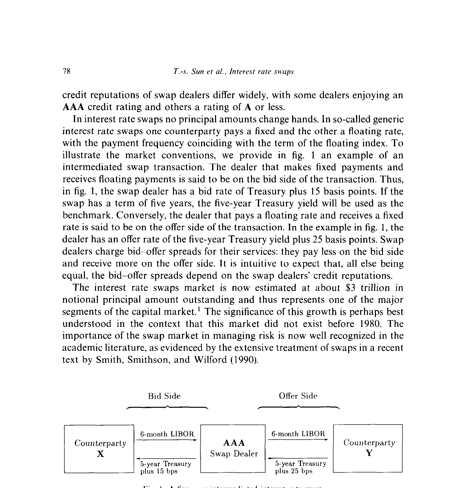
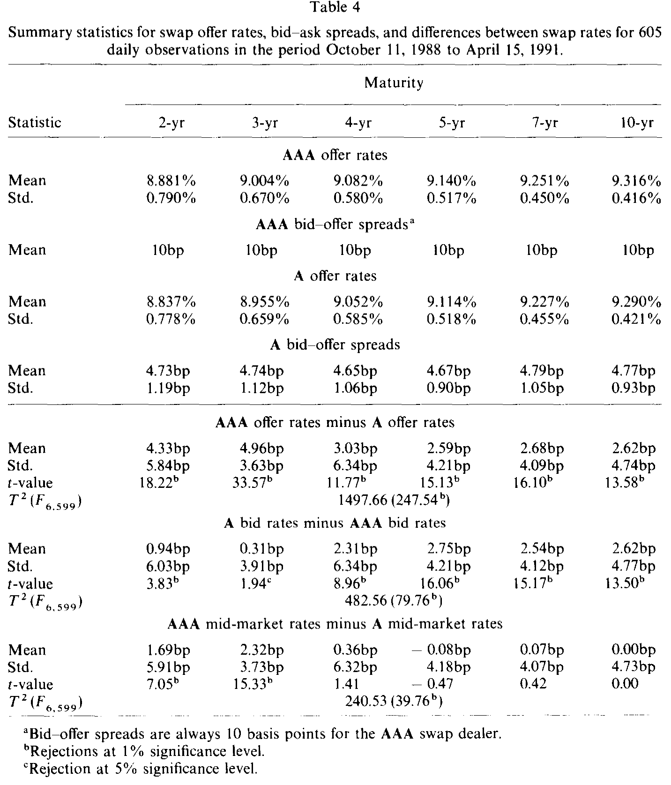
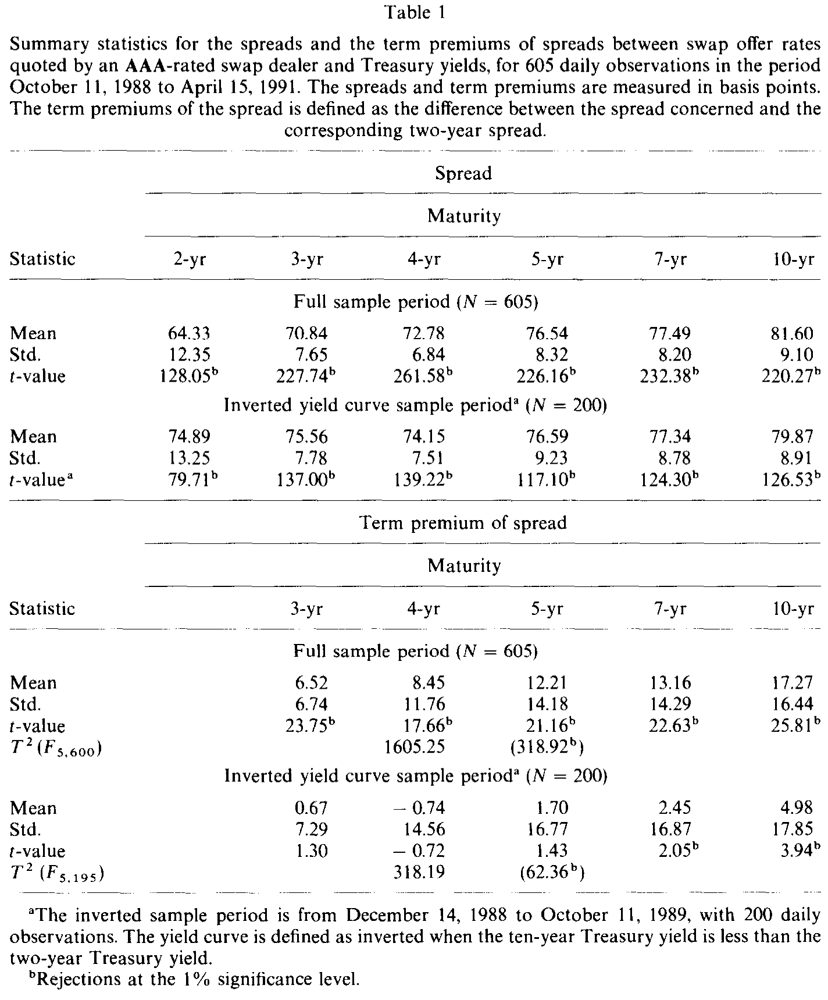
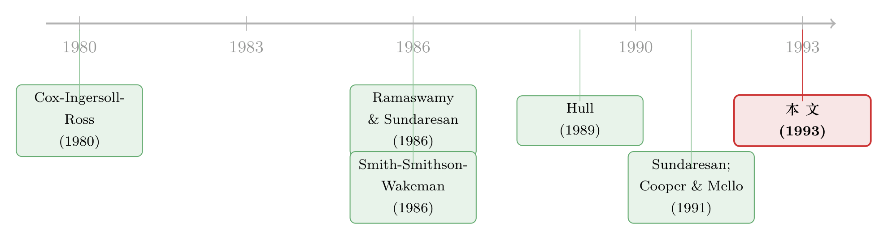

同一笔互换，AAA 报得贵、A 报得便宜——信用评级是怎么钻进报价里的
本文读的是 Sun, Sundaresan & Wang (1993, JFE)：他们拿到两家信用评级不同的互换交易商（AAA 与 A）逐日报价，发现 AAA 交易商的卖价 (offer) 系统性地更高、买价 (bid) 系统性地更低——信用声誉不是抽象的理论，它就明明白白地写在买卖报价里。同时他们也诚实地承认：想用这套数据去检验「互换利率应等于平价债券收益率」的经典命题，几乎是一件做不成的事。
1 一个三万亿美元、却没人看过一眼的市场
先说一个反差。
到这篇论文写作的 1991 年前后，利率互换 (interest rate swap) 市场的名义本金 (notional principal) 存量已经被估到约 3 万亿美元，是资本市场里最大的几个板块之一。可这个市场，1980 年之前根本不存在。十年时间，从零长到三万亿。
更让人意外的是后半句：尽管它已经这么大，作者却说——「据我们所知，文献里还没有任何一篇对利率互换的实证研究」。理论汗牛充栋，数据却是一片空白。这就是这篇论文的全部动机：第一次，把真实的互换报价摊在桌面上看一看。
那互换到底是什么？两个机构约定，在一段预定的期限（maturity）内，就一笔预定的名义本金互相支付利息：一方付固定利率，另一方付浮动利率，浮动端通常挂钩六个月期 伦敦银行间拆借利率（London interbank offered rate, LIBOR）。本金从不易手。绝大多数交易由 互换交易商（swap dealer）——通常是投行或商业银行——居中撮合，吸收对手方的信用风险，赚取 买卖价差（bid-offer spread）。
论文用图 I 给了一个最干净的例子：一笔五年期互换里，交易商在买方（bid side）收浮动、付固定，付的是「五年期国债收益率 + 15 个基点」；在卖方（offer side）付浮动、收固定，收的是「五年期国债收益率 + 25 个基点」。两边一夹，10 个基点的价差就是它的服务费。

Figure I: A five-year Intermediated interest rate swap
记住这张图——它既是全文的起点，也是后面所有「做不成」的根源。
2 理论给了一个漂亮、却几乎无法检验的命题
接着，一个自然的问题是：互换利率应该是多少？
互换定价理论给出一个极其干净的答案。在四条假设下——
- (A.1) 重置日先于支付日，间隔等于浮动指数的期限；
- (A.2) 没有交易成本、税收或其他摩擦；
- (A.3) 没有套利机会；
- (A.4) 没有违约风险——
作者陈述了如下命题：
互换定价命题。 在 (A.1)–(A.4) 下，结算日的无套利互换利率，应当等于一只在与浮动腿相同日期支付固定利息的平价债券（par bond）的收益率。
直觉其实不难。考虑图 I 里交易商与对手方 Y 的那笔五年期互换：Y 多头浮动腿、空头固定腿。它的头寸可以这样复制——按面值发行一只五年期固定利率票据（本金等于名义本金），把本金投到下一个重置日到期的 LIBOR 上；每个重置日收到的利息恰好是「本金 × LIBOR」，取走利息、本金继续滚入下一段 LIBOR；到最后一日，到期的本金正好覆盖那只固定票据的本金偿还。这套策略复制了普通互换的全部现金流。于是互换利率必须等于那只按面值发行的固定票据的票息（即收益率）。
但真正关键的一步，是把这四条假设逐一松开，看符号往哪边偏。
平价债券其实比互换更有风险：它在到期日有一笔同样暴露于违约的本金偿还（balloon payment）；而且债券只有发行人一方会违约，互换则是双方都可能违约——按 Smith, Smithson & Wakeman (1988) 的说法，互换违约取决于「Y 陷入财务困境且互换对 Y 而言价值为负」这个联合概率，再加上净额结算（netting）与抵销（offset）条款，互换的违约冲击比贷款小得多。再叠加 Amihud & Mendelson (1986) 的那条经典逻辑——更高的交易成本会推高报价收益率——两股力量指向同一个方向：
也就是说：零假设是「互换利率 = 平价债券收益率」（δ=0）；备择假设是「平价债券收益率 > 互换利率」（δ>0）。
读到这里你大概也嗅出了那股张力。命题写得漂亮，可它要求你拿到对手方自己的平价债券收益率——图 I 里那个具体的 Y。然而正如作者直言不讳的：「各类对手方的平价债券收益率数据，根本无从获得。」
于是只能退而求其次：用银行间市场的 LIBOR 与 LIBID（伦敦银行间买入利率, London interbank bid rate）去估计平价债券收益率，假装互换交易商的对手方，就由银行间市场的参与者来代表。这一步「假装」，是这篇论文所有结论必须打折扣的地方，作者自己也最清楚。
3 识别的巧思：不去对账，而是用两个评级当「显微镜」
那这篇论文真正立得住的贡献在哪？
不在那个对不上的命题，而在一个更聪明的设计：同时拿到两家信用评级不同的交易商的报价。
数据来自 AIG Financial Products 与 Merrill Lynch：长期债务评级，AIG 为 AAA、Merrill Lynch 为 A（短期商业票据分别是 P1+ 与 P1）。作者把前者称为 AAA 报价、后者称为 A 报价。样本是 605 个交易日的逐日买卖报价，从 1988 年 10 月 11 日到 1991 年 4 月 15 日，覆盖 2、3、4、5、7、10 年六个期限，浮动端为六个月 LIBOR。AIG 还提供了对应的国债基准收益率。
这里的识别逻辑非常干净。回到第 2 节的违约故事：
- 买价（bid） 对应交易商「未来要付固定」的义务。信用越好的交易商，它付出的现金流现值越高，因此它能够付更低的固定利率——所以 AAA 的买价应当低于 A。
- 卖价（offer） 对应交易商「未来要付浮动」的义务。信用越好，它付出的现金流现值越高，于是它能够要求更高的固定利率——所以 AAA 的卖价应当高于 A。
注意，这个推断只需要一个充分（而非必要）条件：只要 AAA 交易商的对手方信用，不显著优于 A 交易商的对手方即可。换句话说，作者不需要去对账谁家的对手方更干净，只要两家对手方质量差不多，评级的符号就该如此显现。这是一个不依赖「对手方平价债券收益率」的、可以直接看的预测。
4 主要结果：评级的签名，清清楚楚
然后，结果出来了，而且非常利落。
先看价差本身。如表 4 所示，AAA 交易商的买卖价差永远是 10 个基点；而 A 交易商的价差只在 4.75 个基点上下小幅波动。信用更好的那家，反而把价差报得更宽——这与「它在承担、并被定价的那部分信用保护更值钱」是一致的。

Table 4
再看符号。把两家报价拆成三种比较：(i) AAA 卖价减 A 卖价，(ii) A 买价减 AAA 买价，(iii) AAA 中点减 A 中点。结论是：
- AAA 的卖价显著高于 A 的卖价；AAA 的买价显著低于 A 的买价。 A 的报价被 AAA 的报价「夹」在中间（bracketed）。
- 逐笔来看更直接：605 个观测里，89% 到 96% 的 AAA 卖价高于 A 卖价，59% 到 93% 的 AAA 买价低于 A 买价。
这就是信用声誉在报价里留下的签名——理论说该往哪边偏，数据就往哪边偏。
但反转随之而来：两家的「中点」（买卖均值）却几乎一样。 对于四年及以上的互换，AAA 与 A 的报价中点在统计上没有显著差异。也就是说，评级差异主要体现在价差的宽窄与买卖两端的摆位上，而非互换的「公允中枢」——这在直觉上也讲得通：中点更接近无违约的基准利率，违约风险则像一层皮，分别裹在买卖两端。
5 那个对不上的命题，到底差在哪
回到第 2 节那个做不成的检验。作者还是硬着头皮做了，结论同样诚实。
把互换报价和用 LIBOR 估计的平价债券收益率放在一起比：两家交易商的互换卖价都显著低于 LIBOR 平价债券收益率。 AAA 卖价对平价收益率的偏离，平均约 8 到 12 个基点；A 卖价的偏离约 12 到 15 个基点。方向上完全符合「δ>0」的备择假设——平价债券收益率确实更高。
可问题在于量级。银行间市场的买卖价差（LIBOR 与 LIBID 之差）本身就稳定在约 12.5 个基点。上面那些 8–15 个基点的偏离，绝大部分落在这条 12.5 个基点的银行间价差之内。换句话说，你看到的「违约楔子」，很可能只是你用来做基准的那把尺子自己的刻度误差。命题的方向对了，强度却淹没在数据噪声里。
数据的麻烦还不止于此。作者特意用了两个来源的 LIBOR——DRI（取自 Reuters）和 Data Stream（取自 Financial Times）——来交叉验证。两套数据大多数差异在 10 个基点以内，但在两年期（均值 0.87bp，t = 2.88）和五年期（均值 −0.81bp，t = −2.47）上统计显著，「全期限差异为零」的联合假设在 1% 水平被拒绝。好在这些差异在经济意义上不大、且随时间随机游走（见图 5 的路径），用哪一套数据对最终结论几乎没有影响。
最伤的是时间不同步（asynchronicity）。互换报价钉住活跃交易的国债基准，变动频繁；银行间市场相对清淡、报价变动慢。作者用平价收益率的变化去回归互换报价的变化，发现周频回归远好于日频回归——这正是报价不同步留下的指纹。它提醒后来者：想真正检验互换定价理论，你需要的是互换的成交数据和对手方真实的平价债券收益率，而不是两个市场各报各的、还差着时差的报价。
顺带一提，国债与互换曲线本身也讲了个有意思的小故事：样本里 405 天是上斜曲线、200 天是倒挂曲线，互换曲线随国债曲线一起倒挂。期限溢价上，国债从 2 年期 8.24% 升到 10 年期 8.5%（26 个基点），AAA 互换卖价从 8.88% 升到 9.32%（44 个基点）；而互换利差对国债的期限溢价，在整个样本里显著为正、在倒挂期里却大多不显著（如表 1，3 年期倒挂样本均值仅 0.67bp，t = 1.30）。

Table 1
6 文献脉络
把这条线捋一捋。
互换定价的地基，是浮动利率工具的估值。Cox, Ingersoll & Ross (1980) 分析了可变利率贷款合约，Ramaswamy & Sundaresan (1986) 系统给出了浮动利率工具的估值理论与证据——有了这两块砖，互换就可以被看成「找到一组固定支付，使其现值等于浮动支付」的问题。Smith, Smithson & Wakeman (1986, 1988) 把互换市场的演化与无套利定价讲清楚，正是本文那个「互换利率 = 平价债券收益率」命题的直接来源；Bicksler & Chen (1986)、Turnbull (1987) 则从经济动因的角度解释了互换市场为何存在。

接着是违约风险这条支线。Hull (1989) 用或有权益（contingent-claims）的思路处理表外承诺的资本计提，Sundaresan (1991)、Cooper & Mello (1991) 进一步给出带利率风险与违约风险的互换定价方法——本文那条「平价债券收益率 ≥ 互换利率」的备择假设，正落在这条线上。再加上 Amihud & Mendelson (1986) 关于交易成本抬高报价收益率的经典结论，本文恰好坐在「定价理论」与「实证空白」的交汇处：它不发明新模型，而是第一个把这些理论预测拖到真实报价面前对质。
往后看，这条「互换/利差里的信用与摩擦」之路一直延伸到今天。互换利差为何会转负、套利风险如何被定价，已经是一个独立的研究主题（关于这一点，可参见《互换利差为何敢于「转负」：把套利的风险，算进价格里》）；而「违约风险到底有没有被定进价格」这个问题，则在公司债市场被反复追问（可参见《违约真的发生时，市场到底给没给你保费？》）。
7 评论与延伸（Q&A + 研究方向）
(a) 几个可能的疑问
Q：这篇论文到底证明了什么——是「互换定价理论成立」吗？
不是。它干净地证明的，是信用评级会进入报价：AAA 卖价更高、买价更低、价差更宽，且 89–96% 的逐笔比较都符合方向预测。至于「互换利率 = 平价债券收益率」这个核心命题，作者的态度是诚实的「测不准」——方向对（平价收益率更高），但偏离量（8–15bp）基本被淹没在银行间 12.5bp 的价差里。它的价值，一半在结论，一半在「警示后人哪里有坑」。
Q：AAA 价差更宽，听起来不是反直觉吗？信用更好不该更便宜？
关键要分清「中点」和「价差」。两家的报价中点其实几乎一样（四年期以上无显著差异），所以并不是 AAA 整体「更贵」。更宽的价差反映的是：AAA 在买卖两端各让出更多，因为它提供的那份「我一定履约」的信用保证更值钱，理应在两端都收得更足。便宜与否要看你站在买方还是卖方。
Q：用银行间 LIBOR/LIBID 替代「对手方的平价债券收益率」，这个替代可信吗？
这是全文最脆弱的一环，作者自己点破了。理论命题要的是图 I 里那个具体对手方 Y 的平价债券收益率，现实中拿不到，只能假设对手方≈银行间市场参与者。问题是银行间市场更清淡、报价更慢，于是产生时间不同步——这也是为什么周频回归远好于日频。把它当「方向性证据」可以，当「精确检验」不行。
Q：为什么两套 LIBOR（DRI 与 Data Stream）会显著不同，又说「无所谓」？
两者来自不同的报价行集合（Reuters 的四家 vs Financial Times 的五家），在 2 年、5 年期上统计显著（
t分别为 2.88、−2.47）。但差异大多在 10bp 内、随时间随机游走，且换哪套数据对最终结论无影响——所以是「统计上显著、经济上不重要」。这本身就是个好提醒：统计显著 ≠ 经济显著。
Q：「中点无差异」对今天的衍生品估值有什么含义？
它暗示一个分解：互换的公允中枢主要由无违约的基准利率决定，而信用与流动性主要塑造买卖两端的摆位与价差宽窄。后来 CVA/DVA（信用/借方估值调整）的整个框架，本质上就是把这层「裹在两端的皮」显式地定价出来——这篇 1993 年的论文，算是用报价数据给了它一个最早的经验注脚。
Q：样本里有上斜也有倒挂的曲线，这对结论是加分还是减分？
加分。它说明评级签名（AAA 卖价高、买价低）在两种曲线形态下都稳健。不过期限溢价那部分确实对曲线形态敏感：倒挂期里互换利差的期限溢价大多不显著，说明「互换相对国债的额外期限补偿」并非时时存在，而是与利率环境相关。
(b) 几个可能的研究问题与提案
1) 用成交数据重做这个「测不准」的命题。
【经济故事】本文最大的遗憾是只有报价、没有成交，且对手方平价收益率缺失。今天有了 SDR（swap data repository）/DTCC 的互换成交记录，可以把「互换利率 vs 同评级、同期限发行人平价债券收益率」真正配对，直接估出那个违约+流动性楔子 δ。
【可行性】中。成交数据可得，但「同一对手方的平价债券收益率」仍需用发行人债券曲线近似，匹配误差不可避免；识别上可借助评级迁移作为外生变化。doable，但干净度取决于债券曲线构造。
2) 把「评级签名」放到 LIBOR→SOFR 切换的自然实验里。
【经济故事】本文的违约逻辑建立在浮动端是 LIBOR（含银行信用）之上。当浮动基准换成几乎无信用的 SOFR，理论预测「评级对买卖两端的摆位效应」应当减弱。基准切换提供了一个漂亮的断点。
【可行性】高。切换时点明确（2021–2023），交易商评级可观测，可做事件研究/双重差分。数据现成，识别清晰。
3) 交易商网络中的信用定价。
【经济故事】1993 年只有两家交易商。如今互换是典型的核心—边缘交易商网络，可以问：交易商自身的信用，与它在网络中的中心度，谁更能解释它报出的价差？ 这等于把本文的「评级 → 价差」推广到「评级 + 网络位置 → 价差」。
【可行性】中。需要带交易商身份的成交数据（监管数据或部分商业数据），中心度可估；难点在交易商身份的获取与匿名化处理。
4) 把外资对手方拆出来看违约楔子。
【经济故事】本文假设两家交易商的对手方信用「差不多」。但如果对手方里有大量跨境/外资机构，其违约相关性与本地对手方不同，δ 应当随对手方构成变化。这能把「信用风险定价」与「外资持有人」两条线接起来。
【可行性】低到中。需要对手方层面的国别/类型信息，监管数据里偶有但极难获取；更现实的是用跨货币基差互换（cross-currency basis）作为外资需求的代理。
我的判断
这篇论文的真正价值，是方法论上的诚实多过结论本身。它最扎实的贡献——评级在报价里的签名——靠的不是去硬碰那个数据上注定碰不动的命题，而是一个聪明的设计：拿两家评级不同的交易商当显微镜，让信用风险自己显影。89–96% 的逐笔方向一致，是很难用噪声解释的。
但对识别，我有两点保留。其一，样本只有两家交易商、且各自只代表一个评级档——AAA=AIG、A=Merrill Lynch，评级效应和「公司固定效应」是完全混淆的：你无法排除「AIG 就是比 Merrill Lynch 更愿意报宽价差」这种与评级无关的公司风格。真正干净的检验需要同一评级里的多家交易商、以及评级迁移带来的时序变化。其二，那个 12.5bp 的银行间价差，几乎吃掉了全部「违约楔子」——这意味着本文对核心命题其实给不出有信息量的检验，它自己也承认了。
我想看到的后续，是用今天的互换成交数据 + SOFR 切换断点，把这篇三十多年前「测不准」的命题重新测一遍——这一次，尺子终于可能比要测的东西更精确。
参考文献
Amihud, Yakov and Haim Mendelson (1986). Asset pricing and the bid-ask spread. Journal of Financial Economics 17, 223–249.
Bicksler, James and Andrew H. Chen (1986). An economic analysis of interest rate swaps. Journal of Finance 41, 645–655.
Cooper, Ian and Antonio S. Mello (1991). The default risk of swaps. Journal of Finance 48, 597–620.
Cox, John C., Jonathan E. Ingersoll, Jr., and Stephen A. Ross (1980). An analysis of variable rate loan contracts. Journal of Finance 35, 389–403.
Fama, Eugene F. (1984). Term premiums in bond returns. Journal of Financial Economics 13, 529–546.
Hull, John (1989). Assessing credit risk in a financial institution's off-balance sheet commitments. Journal of Financial and Quantitative Analysis 24, 489–501.
Ramaswamy, Krishna and Suresh M. Sundaresan (1986). The valuation of floating-rate instruments: Theory and evidence. Journal of Financial Economics 17, 251–272.
Smith, Clifford W., Charles W. Smithson, and Lee Macdonald Wakeman (1986). The evolving market for swaps. Midland Corporate Finance Journal 3, 20–32.
Smith, Clifford W., Charles W. Smithson, and Lee Macdonald Wakeman (1988). The market for interest rate swaps. Financial Management 17, 34–44.
Sun, Tong-sheng, Suresh Sundaresan, and Ching Wang (1993). Interest rate swaps: An empirical investigation. Journal of Financial Economics 34, 77–99.
Sundaresan, Suresh M. (1991). Valuation of swaps. In: Sarkis J. Khoury, ed., Recent Developments in International Banking and Finance, Vol. 5 (Elsevier Science Publishers, New York).
Turnbull, Stuart M. (1987). Swaps: Zero sum game? Financial Management 16, 15–21.